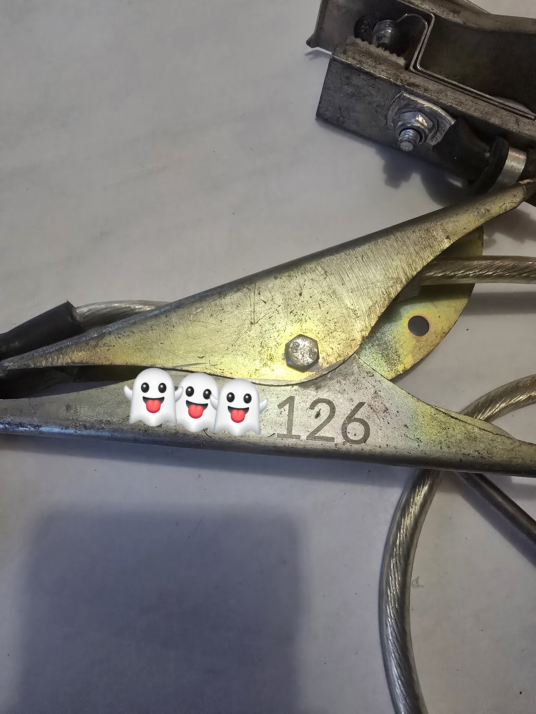
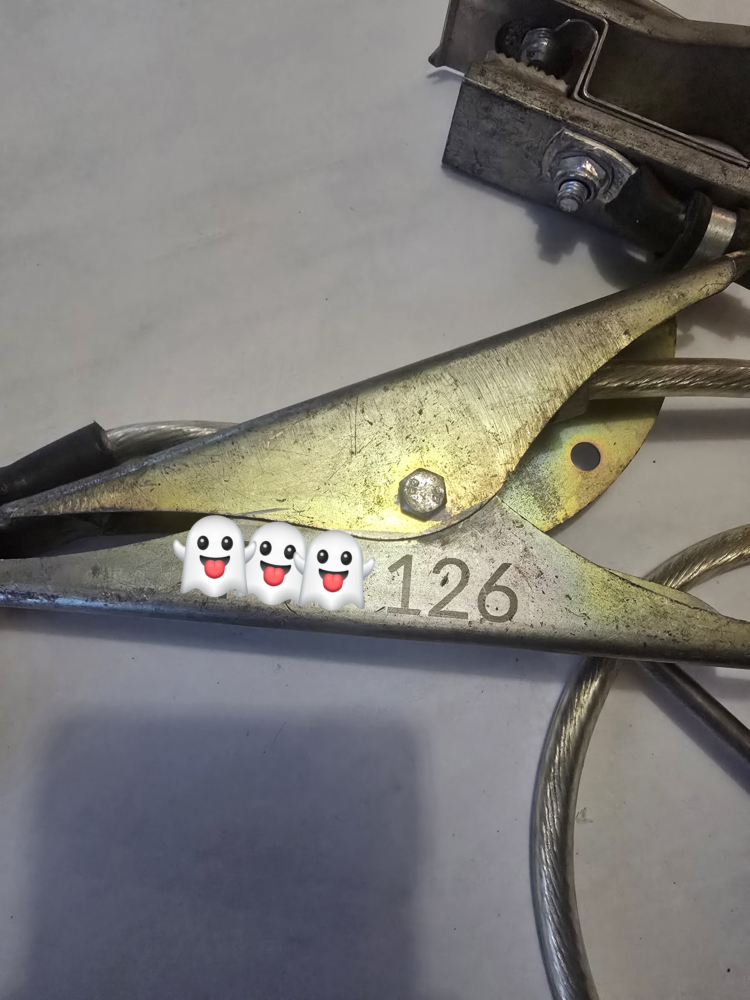

Gravure Laser sur Outils – Laser & Matière by Toutefer
Chez Laser & Matière à La Châtaigneraie, nous réalisons des gravures / Marquage laser sur outils et pièces métalliques avec une précision micrométrique. Idéal pour les professionnels, artisans ou particuliers souhaitant un marquage durable et propre.
Applications de la Gravure sur Outils
La gravure laser permet de personnaliser ou d’identifier tout type d’outil : clé, tournevis, marteau, pinces, instruments de mesure, outils de coupe… Le marquage résiste à l’usure, aux chocs et aux produits chimiques.
Nous proposons également le marquage industriel pour la traçabilité des pièces mécaniques et la gravure de numéros de série, logos ou symboles techniques.
© Laser & Matière by Toutefer — Gravure laser sur outils et pièces mécaniques à La Châtaigneraie (Vendée)
 

Découvrez aussi nos autres réalisations :
Gravure sur métal | Gravure sur cuir | Gravure sur acrylique | Gravure PS5 | Impression 3D | Gravure sur outils | Gravure sur toile